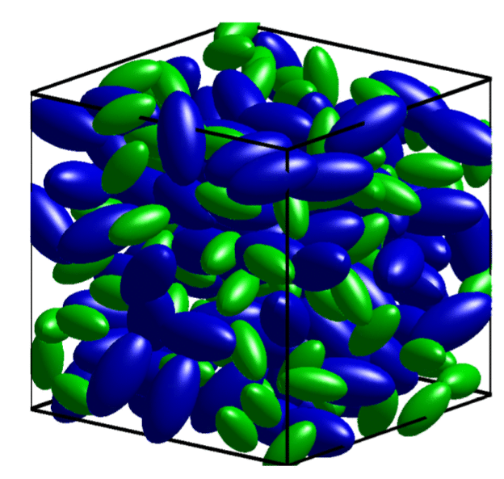

Beyond spheres, the packing of ellipsoidal particles presents richer behavior because particle shape introduces additional rotational degrees of freedom and can significantly raise the achievable random packing fraction. This project explored the dense random packing of ellipsoidal particles in both 2D and 3D.
Ellipsoids are the simplest non-spherical shape and serve as a natural bridge between the well-studied sphere-packing problem and the much more complex packing of arbitrary convex bodies. It has been observed experimentally and computationally that random packings of ellipsoidal particles can reach packing fractions substantially higher than the ~64% hard-sphere packing limit, with a maximum near an aspect ratio of ~1.5.

Animation showing a random packing of ellipsoidal particles.
Understanding how aspect ratio and polydispersity affect the packing fraction and structure of ellipsoidal assemblies has implications for materials science, pharmaceutical powder processing, and the physics of granular media.